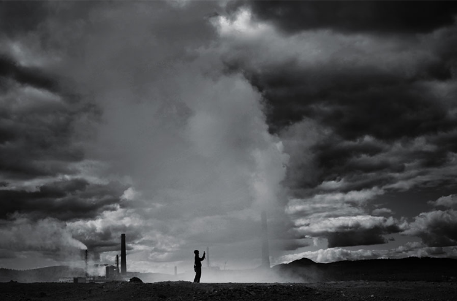

Загрязнение атмосферного воздуха
Одна из серьезнейших глобальных проблем,
с которыми столкнулось человечество.
Опасность загрязнения атмосферы
не только в том, что в чистый воздух
попадают вредные вещества,
губительные для живых организмов,
но и в вызываемом загрязнениями
изменении климата Земли.